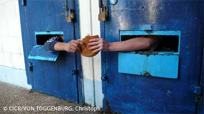

UN CIVIL QUI EST PRIVE DE LIBERTE

Dans le cadre d’un conflit armé international, un civil peut être privé de liberté pour deux raisons :
 il a directement participé aux hostilités ;
il a directement participé aux hostilités ;
 une Partie au conflit l’estime nécessaire pour d'impérieuses raisons de sécurité.
une Partie au conflit l’estime nécessaire pour d'impérieuses raisons de sécurité.
1) Participation directe aux hostilités
Un civil, à la différence du combattant, ne peut pas participer aux hostilités. De ce fait, il peut être privé de liberté et puni uniquement pour le fait d’avoir pris part aux hostilités. De plus, si durant sa participation aux hostilités, il a commis des crimes de guerres, il pourra évidemment être poursuivi pour des actes plus précis.
2) Privation de liberté pour d’impérieuses raisons de sécurité
En cas d’occupation, les Parties au conflit peuvent, si elles l’estiment nécessaire pour d'impérieuses raisons de sécurité, décider la mise en résidence forcée ou l’internement de civils ennemis ou de civils résidant dans les territoires occupés.
Ces mesures doivent rester exceptionnelles, à savoir uniquement si la sécurité de la Puissance détentrice l’exige et en dernier recours lorsque d’autres moyens moins sévères (tel que l’enregistrement auprès des autorités) ne suffisent pas.
L’internement, dans ces conditions, n’est donc nullement une peine mais une mesure de sûreté ultime, comparable à l’internement des prisonniers de guerre, qui vise à empêcher les actes que l’interné pourrait commettre au préjudice de la sécurité de la Puissance occupante.
| Sources |
- Tribunal pénal international pour l’ex-Yougoslavie, affaire Dusko Tadic du 2 octobre 1995, par. 70
- Commentaire de l’article 2 commun aux quatre Conventions de Genève de 1949
- Commentaire de l’article 1er du Premier Protocole additionnel (1977) aux Conventions de Genève de 1949